向量值函數
📌 本章要解決的核心問題
1682 年，一顆彗星劃過夜空。1705 年，天文學家哈雷（Edmond Halley）運用牛頓的新運動定律做出大膽預測：1531、1607 和 1682 年出現的彗星其實是同一顆，它將在 1758 年再度回歸。哈雷的預測被證明是正確的——哈雷彗星沿橢圓軌道運行，太陽位於橢圓的一個焦點上。本章將展示如何使用向量值函數（vector-valued functions）的微積分來計算哈雷彗星與太陽的平均距離，並系統性地建立描述空間曲線運動的完整數學框架。
🔑 關鍵概念（10 條）
- 向量值函數定義：$\mathbf{r}(t) = \langle f(t), g(t), h(t) \rangle$，其中 $f,g,h$ 是實值分量函數
- 空間曲線：三維向量值函數的圖形，終端點軌跡構成一條空間曲線
- 螺旋線（helix）：$\mathbf{r}(t) = \langle R\cos t, R\sin t, ht \rangle$ 描述的三維螺旋
- 向量值函數的極限：對各分量函數分別取極限
- 導數 = 切向量：$\mathbf{r}'(t)$ 給出曲線在該點的切向量
- 單位切向量：$\mathbf{T}(t) = \frac{\mathbf{r}'(t)}{\|\mathbf{r}'(t)\|}$——方向不變，長度為 1
- 弧長與曲率：$s(t) = \int_a^t \|\mathbf{r}'(u)\| du$；$\kappa = \left\|\frac{d\mathbf{T}}{ds}\right\|$
- Frenet 標架（TNB 標架）：單位切向量 $\mathbf{T}$、單位法向量 $\mathbf{N}$、副法向量 $\mathbf{B}$ 形成三維參考系
- 加速度的切向與法向分量：$\mathbf{a} = a_T\mathbf{T} + a_N\mathbf{N}$
- 克卜勒行星運動定律：橢圓軌道、等面積定律、$T^2 \propto a^3$——可用向量微積分證明
🧭 邏輯鏈
向量值函數定義 → 空間曲線圖形 → 極限與連續性 → 導數（切向量）→ 積分 → 弧長與弧長參數化 → 曲率 → TNB 標架 → 速度與加速度 → 切向/法向分量 → 拋體運動 → 克卜勒定律證明
3.1 向量值函數與空間曲線（Vector-Valued Functions and Space Curves）
向量值函數的定義
向量值函數是我們從單變數微積分邁向三維空間分析的關鍵橋樑。與一般的實值函數 $y = f(x)$ 不同——後者將一個實數輸入對應到一個實數輸出——向量值函數（vector-valued function）將一個實數參數 $t$ 對應到一個向量。形式如下：
參數 $t$ 通常代表時間，但也可以是任何實數。向量值函數的定義域（domain）是使所有分量函數都有定義的 $t$ 值所構成的集合——你需要分別檢查每個分量函數的限制條件，然後取交集。例如，$\mathbf{r}(t) = \langle \sqrt{t}, \ln(t-1) \rangle$ 的定義域是 $t \geq 0$ 和 $t > 1$ 的交集，也就是 $t > 1$。
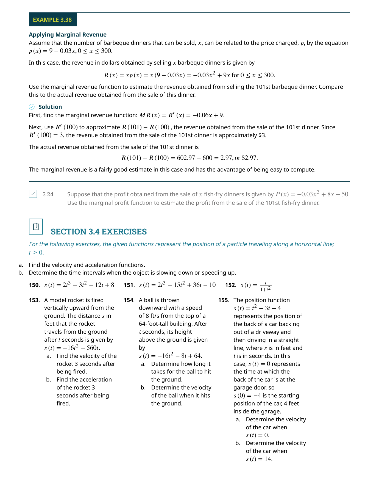
實值函數 $y = f(x)$ 有一個根本限制：每個 $x$ 只能對應一個 $y$。這意味著你無法用 $y = f(x)$ 來描述一個圓（圓會違反垂直線檢驗）。但向量值函數透過引入參數 $t$，讓 $x$ 和 $y$（以及三維中的 $z$）各自獨立地隨 $t$ 變化，從而可以描述任何形狀的曲線——包括圓、螺旋線、甚至自我交叉的曲線。
向量值函數的圖形
向量值函數 $\mathbf{r}(t) = \langle f(t), g(t) \rangle$ 的圖形是平面上所有終端點 $(f(t), g(t))$ 的軌跡，稱為平面曲線（plane curve）。三維版本 $\mathbf{r}(t) = \langle f(t), g(t), h(t) \rangle$ 的圖形則稱為空間曲線（space curve）。我們通常將向量畫在標準位置（起點在原點），然後連接所有終端點來形成曲線。
最經典的例子是螺旋線（helix）：$\mathbf{r}(t) = \langle \cos t, \sin t, t \rangle$。如果只看 $x$ 和 $y$ 分量（$\cos t, \sin t$），這是一個單位圓；加上 $z = t$ 後，當 $t$ 增加時，曲線一邊繞圈一邊上升，形狀像一條彈簧。螺旋線在 DNA 雙螺旋結構、彈簧設計和電磁學中反覆出現。
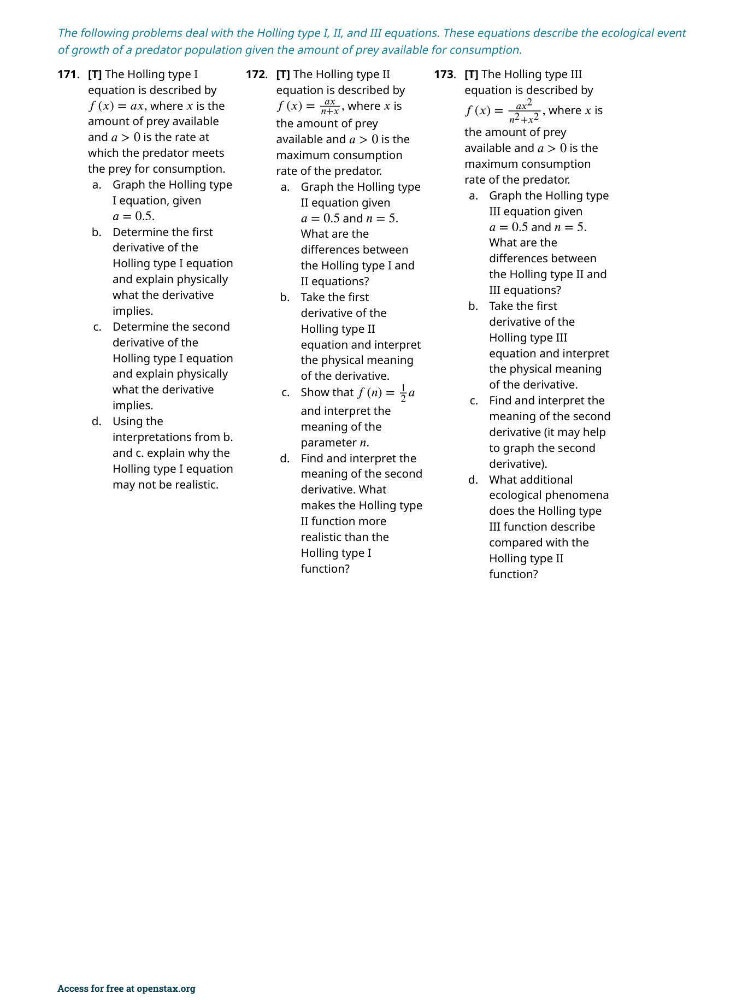
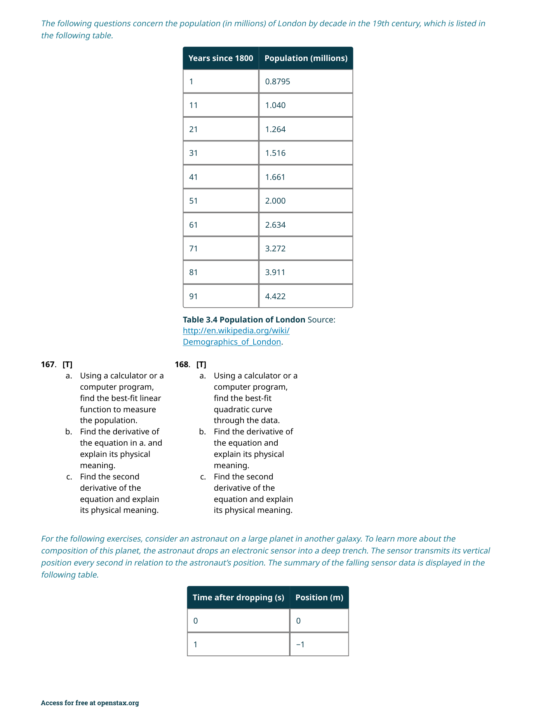
同一條曲線可以有無窮多種不同的向量值函數表示。例如 $\mathbf{r}_1(t) = \langle \cos t, \sin t \rangle$ 和 $\mathbf{r}_2(t) = \langle \cos(2t), \sin(2t) \rangle$ 都畫出單位圓——差別只在於「繞圈的速度」不同（後者快一倍）。這種不同表示稱為重新參數化（reparameterization），本章稍後會深入討論弧長參數化。
📝 範例
📝 範例 3.1：求值與定義域給定 $\mathbf{r}(t) = \langle \sqrt{t-2}, \frac{1}{t-3} \rangle$，求 $\mathbf{r}(4)$ 和定義域。
解：$\mathbf{r}(4) = \langle \sqrt{4-2}, \frac{1}{4-3} \rangle = \langle \sqrt{2}, 1 \rangle$。
定義域：$t-2 \geq 0 \implies t \geq 2$；$t-3 \neq 0 \implies t \neq 3$。取交集得 $[2, 3) \cup (3, \infty)$。
向量值函數的極限與連續性
向量值函數的極限遵循一個極其自然的規則：對每個分量函數分別取極限。形式化地說：
向量的連續性定義與實值函數完全平行：$\mathbf{r}(t)$ 在 $t = a$ 連續若且唯若 (1) $\mathbf{r}(a)$ 存在，(2) $\lim_{t \to a} \mathbf{r}(t)$ 存在，且 (3) $\lim_{t \to a} \mathbf{r}(t) = \mathbf{r}(a)$。由於極限是逐分量計算的，$\mathbf{r}(t)$ 連續的充要條件是每個分量函數都在該點連續。
📝 範例
📝 範例 3.3：計算向量值函數的極限計算 $\lim_{t \to 1} \left\langle \frac{t^2-1}{t-1}, \sqrt{t+3}, \frac{\sin(t-1)}{t-1} \right\rangle$。
解：逐分量處理：
第一分量 $\lim_{t \to 1} \frac{t^2-1}{t-1} = \lim_{t \to 1} \frac{(t-1)(t+1)}{t-1} = \lim_{t \to 1} (t+1) = 2$。
第二分量 $\lim_{t \to 1} \sqrt{t+3} = 2$。
第三分量 $\lim_{t \to 1} \frac{\sin(t-1)}{t-1} = 1$（標準三角極限）。
因此 $\lim_{t \to 1} \mathbf{r}(t) = \langle 2, 2, 1 \rangle$。
向量值函數的極限為第 3.2 節的導數定義奠定了基礎。正如 $\lim_{\Delta x \to 0} \frac{f(x+\Delta x)-f(x)}{\Delta x}$ 定義了實值函數的導數，$\lim_{\Delta t \to 0} \frac{\mathbf{r}(t+\Delta t)-\mathbf{r}(t)}{\Delta t}$ 定義了向量值函數的導數——即切向量。
3.2 向量值函數的微積分（Calculus of Vector-Valued Functions）
向量值函數的導數
向量值函數的導數定義與實值函數的導數幾乎一模一樣——唯一的區別是，現在分子和分母中的量變成向量：
在實務上，我們不需要每次都回到極限定義——以下定理提供了更直接的方法：
導數 $\mathbf{r}'(t)$ 的幾何意義是本章最重要的直覺之一：$\mathbf{r}'(t_0)$ 是一個向量，它指向曲線在 $t = t_0$ 處的切線方向。如果你把 $\mathbf{r}(t)$ 想像成一個運動中物體的位置，那麼 $\mathbf{r}'(t)$ 就是它的速度向量——方向是瞬間運動方向，大小是瞬間速率。
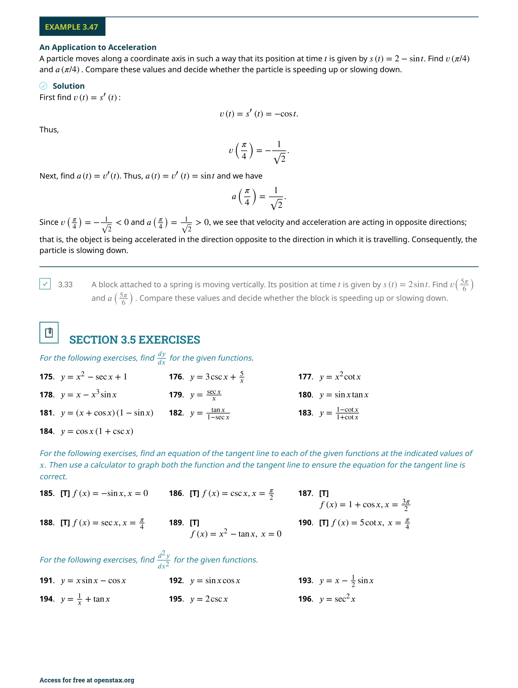
向量值函數的導數同時攜帶兩個資訊：(1) 方向——切向量指向曲線的瞬間行進方向；(2) 大小——$\|\mathbf{r}'(t)\|$ 衡量參數 $t$ 變化時曲線上對應點移動的「速率」。這兩個資訊在後續的弧長和曲率討論中至關重要。
微分法則
向量值函數繼承了實值函數的大多數微分法則，但有三種特殊的「乘法法則」需要特別注意——因為向量之間有兩種不同的乘法（點積和外積），加上純量乘向量的情況：
📝 範例
📝 範例 3.5：計算向量值函數的導數求 $\mathbf{r}(t) = \langle e^{2t}, \sin(3t), \ln(t^2+1) \rangle$ 的導數。
解：逐分量微分：
$f'(t) = 2e^{2t}$（連鎖律）
$g'(t) = 3\cos(3t)$（連鎖律）
$h'(t) = \frac{2t}{t^2+1}$（連鎖律）
因此 $\mathbf{r}'(t) = \langle 2e^{2t}, 3\cos(3t), \frac{2t}{t^2+1} \rangle$。
單位切向量
切向量 $\mathbf{r}'(t)$ 告訴我們曲線的方向，但它的大小會隨著參數化方式而改變。為了得到一個只與曲線形狀有關、不受參數化影響的方向指標，我們定義單位切向量（principal unit tangent vector）：
當 $\mathbf{r}'(t) = \mathbf{0}$ 時，單位切向量無定義。這發生在曲線有尖點（cusp）或物體瞬間靜止的時刻。在計算 $\mathbf{T}(t)$ 之前，務必確認分母不為零——否則你除以零得到的不是數學結果，而是程式崩潰。
向量值函數的積分
積分的處理方式與導數完全對稱：逐分量積分。不定積分會為每個分量引入一個獨立的積分常數，這些常數組成一個常數向量 $\mathbf{C}$：
📝 範例
📝 範例 3.8：計算向量值函數的積分計算 $\int_0^1 \langle 3t^2, e^t, \cos(\pi t) \rangle \, dt$。
解：逐分量積分：
$\int_0^1 3t^2\,dt = [t^3]_0^1 = 1$
$\int_0^1 e^t\,dt = [e^t]_0^1 = e - 1$
$\int_0^1 \cos(\pi t)\,dt = [\frac{1}{\pi}\sin(\pi t)]_0^1 = 0$
因此 $\int_0^1 \mathbf{r}(t)\,dt = \langle 1, e-1, 0 \rangle$。
如果 $\mathbf{r}(t)$ 代表速度，則其不定積分給出位置（差一個初始位置常數向量）；如果 $\mathbf{r}(t)$ 代表加速度，則其不定積分給出速度。這和單變數微積分中「積分速度得位移」的概念完全一致。
3.3 弧長與曲率（Arc Length and Curvature）
弧長公式
弧長是曲線上兩點之間的「沿曲線行走」的距離。對於由 $\mathbf{r}(t) = \langle f(t), g(t), h(t) \rangle$（$a \leq t \leq b$）描述的平滑曲線，弧長公式為：
平滑曲線（smooth curve）的條件是 $\mathbf{r}'(t)$ 連續且不為零向量——這保證了曲線沒有尖點或「折角」，使弧長公式成立。對於一個螺旋線 $\mathbf{r}(t) = \langle R\cos t, R\sin t, ht \rangle$，$\|\mathbf{r}'(t)\| = \sqrt{R^2 + h^2}$（常數！），因此弧長就是 $\sqrt{R^2 + h^2} \cdot (b-a)$。
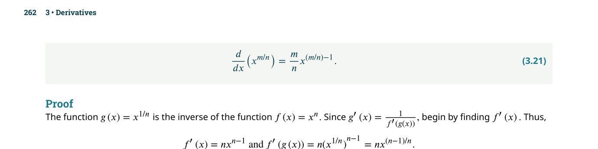
📝 範例
📝 範例 3.9：計算弧長求螺旋線 $\mathbf{r}(t) = \langle \cos t, \sin t, t \rangle$ 從 $t = 0$ 到 $t = 2\pi$（即一圈）的弧長。
解：$\mathbf{r}'(t) = \langle -\sin t, \cos t, 1 \rangle$，$\|\mathbf{r}'(t)\| = \sqrt{\sin^2 t + \cos^2 t + 1} = \sqrt{2}$。
弧長 $s = \int_0^{2\pi} \sqrt{2}\,dt = 2\pi\sqrt{2}$。
注意：這比 $2\pi$（單位圓的周長）長，因為螺旋線在上升的同時也在繞圈。
弧長函數與弧長參數化
弧長函數（arc-length function）$s(t) = \int_a^t \|\mathbf{r}'(u)\|\,du$ 測量從起點到參數值 $t$ 為止，沿曲線行走的總距離。它的導數就是速率：$\frac{ds}{dt} = \|\mathbf{r}'(t)\|$。
如果我們能解出 $t$ 作為 $s$ 的函數（即 $t = t(s)$），就可以把原來的 $\mathbf{r}(t)$ 改寫為 $\mathbf{r}(s) = \mathbf{r}(t(s))$。這稱為弧長參數化（arc-length parameterization）——它的獨特之處在於：參數 $s$ 就是弧長本身，因此 $\|\mathbf{r}'(s)\| = 1$ 恆成立。這意味著在弧長參數化下，切向量永遠是單位向量，大大簡化了曲率和相關計算。
雖然弧長參數化在理論上非常優美，但在實務中往往難以計算——因為你需要先積分 $\|\mathbf{r}'(t)\|$ 得到 $s(t)$，然後再求反函數 $t(s)$。很多常見曲線的弧長積分無法用初等函數表示（例如橢圓的弧長涉及橢圓積分）。在這種情況下，我們使用替代公式（定理 3.6）來計算曲率，而不需要真的找出弧長參數化。
曲率
曲率（curvature）$\kappa$ 衡量曲線在某一點的彎曲程度。直覺上：如果你開車沿著一條曲線行駛，曲率大的地方你需要大幅度轉動方向盤；曲率接近零的地方（接近直線）你幾乎不需要轉彎。正式的定義是：
📝 範例
📝 範例 3.11：計算曲率求螺旋線 $\mathbf{r}(t) = \langle \cos t, \sin t, t \rangle$ 的曲率。
解：使用三維公式 $\kappa = \frac{\|\mathbf{r}' \times \mathbf{r}''\|}{\|\mathbf{r}'\|^3}$。
$\mathbf{r}'(t) = \langle -\sin t, \cos t, 1 \rangle$，$\|\mathbf{r}'(t)\| = \sqrt{2}$。
$\mathbf{r}''(t) = \langle -\cos t, -\sin t, 0 \rangle$。
$\mathbf{r}' \times \mathbf{r}'' = \langle \sin t, -\cos t, 1 \rangle$，$\|\mathbf{r}' \times \mathbf{r}''\| = \sqrt{\sin^2 t + \cos^2 t + 1} = \sqrt{2}$。
因此 $\kappa = \frac{\sqrt{2}}{(\sqrt{2})^3} = \frac{\sqrt{2}}{2\sqrt{2}} = \frac{1}{2}$。
螺旋線的曲率是常數——這說明了為什麼螺旋線是均勻彎曲的。
法向量與副法向量：Frenet 標架
在三維空間中，僅僅知道切向量是不夠的——曲線可以在無窮多個方向中彎曲。為了完整描述曲線在每一點的局部幾何，我們引入Frenet 標架（TNB 標架），由三個互相正交的單位向量組成：

$\mathbf{N}$ 永遠與 $\mathbf{T}$ 正交。為什麼？因為 $\mathbf{T}$ 是單位向量，其導數必定垂直於自身（這是單位向量函數的一個重要性質：$\|\mathbf{u}(t)\| = 1 \implies \mathbf{u} \cdot \mathbf{u}' = 0$）。$\mathbf{B}$ 永遠是單位向量，因為它是兩個正交單位向量的外積。
Frenet 標架在物理學和工程學中有廣泛應用：在設計雲霄飛車時，$\mathbf{N}$ 的方向決定了乘客感受到的「橫向 G 力」；在機械手臂路徑規劃中，TNB 標架幫助確定末端執行器的姿態；在電腦圖學中，這些向量用於讓攝影機平穩地沿曲線移動（「沿路徑飛行的攝影機」）。
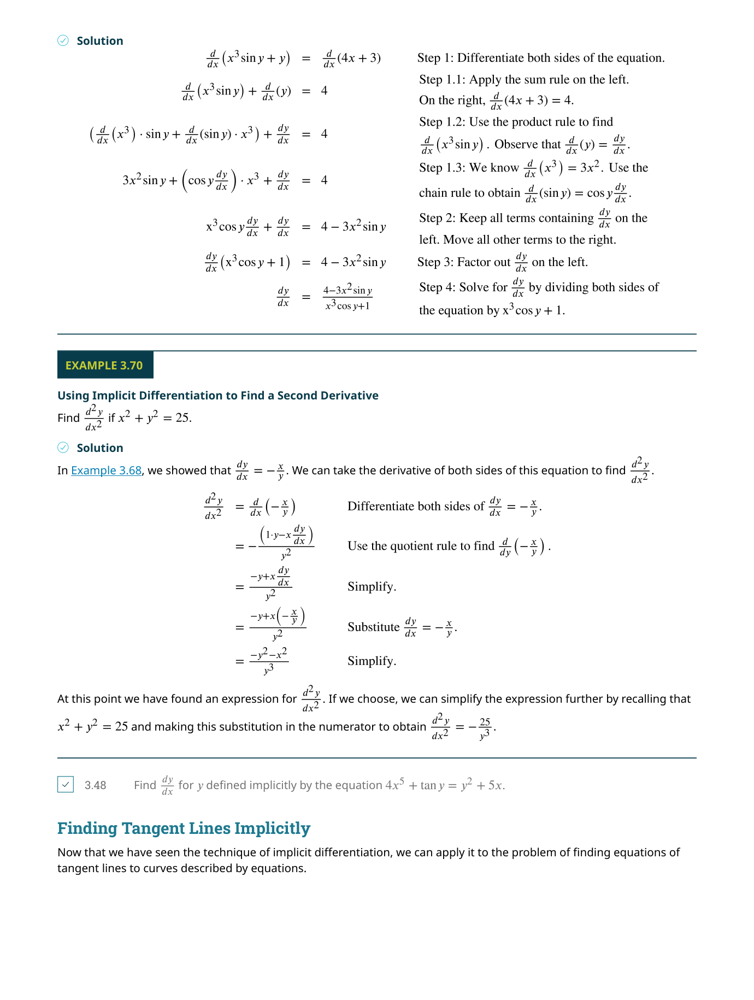
3.4 空間中的運動（Motion in Space）
速度向量與加速度向量
如果我們將 $\mathbf{r}(t)$ 解釋為一個物體在時間 $t$ 的位置向量（position vector），那麼導數就有了直接的物理意義：
速度向量 $\mathbf{v}(t)$ 永遠切於運動軌跡——這在物理上是顯然的：物體瞬時運動的方向就是其軌跡的切線方向。加速度向量 $\mathbf{a}(t)$ 則指向軌跡的凹側（轉彎的內側），因為加速度的作用正是改變速度的方向和大小。
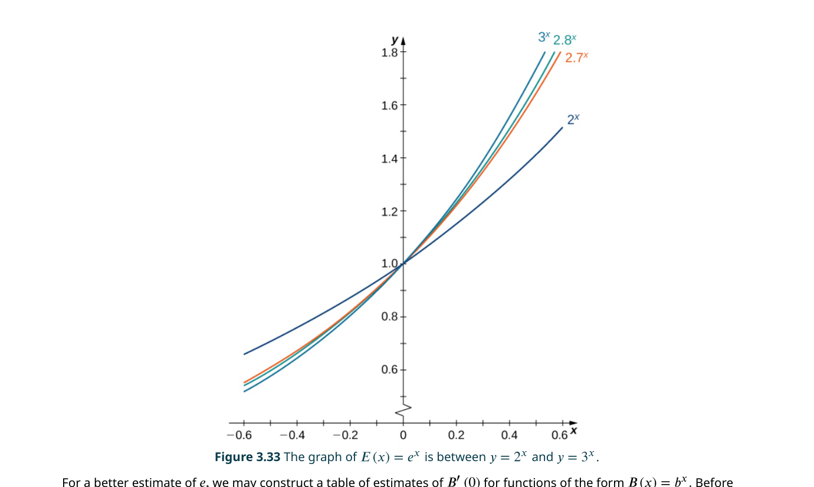
📝 範例
📝 範例 3.14：計算速度、加速度和速率一質點沿 $\mathbf{r}(t) = \langle t, t^2, t^3 \rangle$ 運動（$t$ 的單位為秒，距離單位為英尺）。求 $t=2$ 時的速度、加速度和速率。
解：$\mathbf{v}(t) = \langle 1, 2t, 3t^2 \rangle$ → $\mathbf{v}(2) = \langle 1, 4, 12 \rangle$ ft/s
$\mathbf{a}(t) = \langle 0, 2, 6t \rangle$ → $\mathbf{a}(2) = \langle 0, 2, 12 \rangle$ ft/s²
速率 $= \|\mathbf{v}(2)\| = \sqrt{1^2 + 4^2 + 12^2} = \sqrt{161} \approx 12.69$ ft/s
加速度的切向分量與法向分量
加速度向量可以被分解為兩個互相正交的分量——這可能是本章最具洞察力的分解之一：
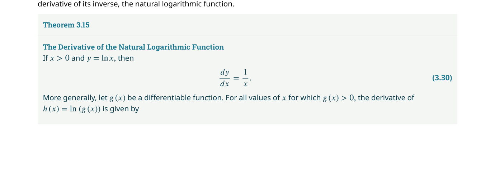
當你以等速率過彎時，$a_T = 0$（速率不變），但 $a_N > 0$（方向在變）。$a_N$ 就是你所感受到的「向心加速度」——把你推向座位外側的那股力量。如果此時你同時踩煞車，$a_T$ 變成負的，加速度向量會指向轉彎內側偏後方的方向。
📝 範例
📝 範例 3.15：計算加速度分量一質點沿 $\mathbf{r}(t) = \langle t, t^2, t^3 \rangle$ 運動。求 $t = 1$ 時的 $a_T$ 和 $a_N$。
解：$\mathbf{v}(1) = \langle 1, 2, 3 \rangle$，$\|\mathbf{v}(1)\| = \sqrt{14}$。
$\mathbf{a}(1) = \langle 0, 2, 6 \rangle$。
$a_T = \frac{\mathbf{v} \cdot \mathbf{a}}{\|\mathbf{v}\|} = \frac{1(0) + 2(2) + 3(6)}{\sqrt{14}} = \frac{22}{\sqrt{14}} \approx 5.88$ ft/s²。
$\mathbf{v} \times \mathbf{a} = \langle 2(6)-3(2), 3(0)-1(6), 1(2)-2(0) \rangle = \langle 6, -6, 2 \rangle$，$\|\mathbf{v} \times \mathbf{a}\| = \sqrt{76}$。
$a_N = \frac{\sqrt{76}}{\sqrt{14}} = \sqrt{\frac{76}{14}} = \sqrt{\frac{38}{7}} \approx 2.33$ ft/s²。
拋體運動（Projectile Motion）
拋體運動是向量值函數最經典的應用之一。假設一個物體以初速 $v_0$、角度 $\theta$ 從原點發射，只受重力（向下，$g \approx 32 \text{ ft/s}^2 \approx 9.8 \text{ m/s}^2$）作用，忽略空氣阻力：

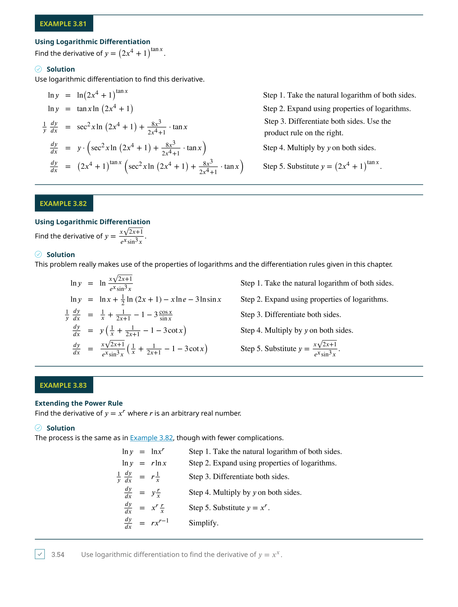
📝 範例
📝 範例 3.16：砲彈運動一顆砲彈從高 100 ft 的懸崖上以 30° 仰角和初速 600 ft/s 發射。求：(a) 最大高度；(b) 落水時間；(c) 水平距離。
解：$\mathbf{r}(t) = (600\cos 30^\circ)t\,\mathbf{i} + [100 + (600\sin 30^\circ)t - 16t^2]\mathbf{j}$。
(a) 最高點：$v_y = 600\sin 30^\circ - 32t = 0$ ⇒ $t = \frac{300}{32} = 9.375$ s。高度 $= 100 + 300(9.375) - 16(9.375)^2 \approx 1506.4$ ft。
(b) 落水：$y(t) = 0$ ⇒ 解二次方程得 $t \approx 19.08$ s。
(c) 距離：$x(19.08) = 600\cos 30^\circ \cdot 19.08 \approx 9914$ ft。
克卜勒行星運動定律
17 世紀初，克卜勒（Johannes Kepler）根據第谷·布拉赫（Tycho Brahe）的精密觀測數據，歸納出三條描述行星運動的定律。這些定律後來被牛頓用向量微積分和萬有引力定律嚴格證明——這是數學物理史上最輝煌的成就之一。
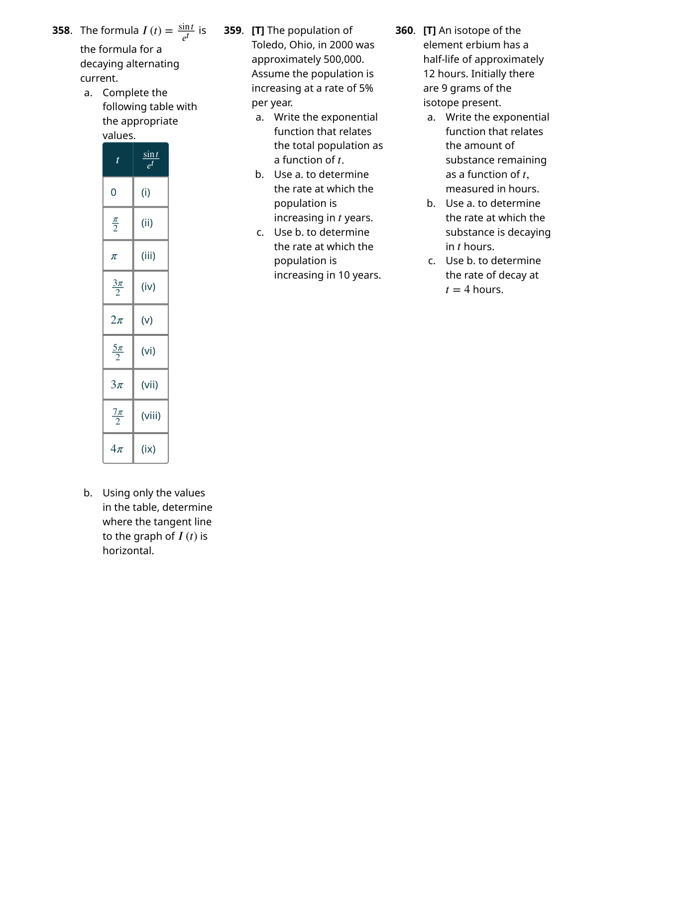
牛頓的證明過程使用了本章所學的幾乎所有工具：向量值函數的導數、外積的微分法則、外積的性質。證明從牛頓第二定律 $\mathbf{F} = m\mathbf{a}$ 和萬有引力定律 $\mathbf{F} = -\frac{GMm}{r^3}\mathbf{r}$ 出發，首先證明 $\mathbf{r} \times \mathbf{v}$ 是常數向量（這直接推導出第二定律——面積速率守恆），然後推導出軌道方程是圓錐曲線的極坐標形式（即第一定律）。
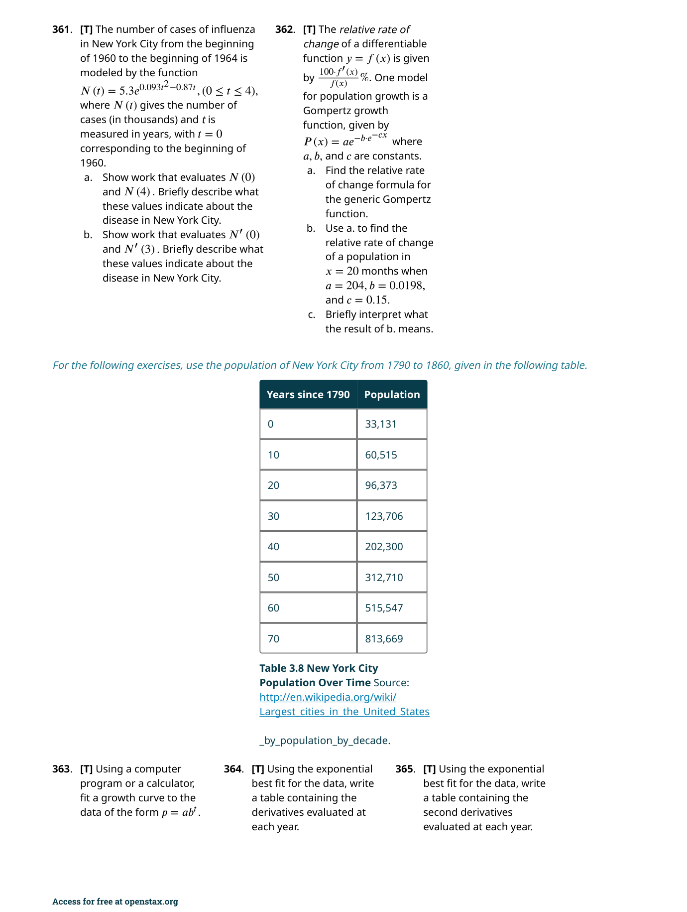
📝 範例
📝 範例 3.18：哈雷彗星與太陽的平均距離哈雷彗星的公轉週期約為 76.1 年。求它與太陽的平均距離（以 AU 為單位）。
解：使用克卜勒第三定律 $T^2 = a^3$（簡化版，適用於繞太陽運行的天體）：
$a = T^{2/3} = (76.1)^{2/3} \approx 17.96$ AU。
這大約是 $1.67 \times 10^9$ 英里。比較：冥王星與太陽的平均距離約為 39.5 AU——哈雷彗星的遠日點（aphelion）與冥王星的軌道範圍重疊。
學生專題：斜面彎道上的賽車
本章末尾的學生專題將所有概念整合在一起，分析 NASCAR 賽車在傾斜彎道（banked turn）上的最大安全速度。關鍵發現：最大速度與車的質量無關，只取決於彎道半徑 $R$、傾斜角 $\theta$、和輪胎與路面之間的摩擦係數 $\mu$：

對於以等速率 $v$ 在半徑 $R$ 的圓形路徑上運動的物體，加速度的法向分量（向心加速度）為 $a_N = \frac{v^2}{R}$。這是因為 $\mathbf{a} = a_T\mathbf{T} + a_N\mathbf{N}$，而等速率意味著 $a_T = 0$，所以 $\mathbf{a} = a_N\mathbf{N} = \kappa v^2 \mathbf{N} = \frac{v^2}{R}\mathbf{N}$。這個公式在物理考題中出現頻率極高。
📋 關鍵概念回顧（Key Concepts）
- 向量值函數：將實數參數 $t$ 映射到空間向量 $\mathbf{r}(t) = \langle f(t), g(t), h(t) angle$，其圖形是一條空間曲線
- 定義域與空間曲線：向量值函數的定義域是所有使各分量函數都有定義的 $t$ 值之交集
- 極限與連續性：$\lim_{t\to a}\mathbf{r}(t) = \langle \lim f(t), \lim g(t), \lim h(t) angle$；若極限等於函數值，則在該點連續
- 導數與切向量：$\mathbf{r}'(t) = \langle f'(t), g'(t), h'(t) angle$ 是曲線在 $\mathbf{r}(t)$ 處的切向量，指向運動方向
- 微分法則：向量值函數的微分滿足加減、純量乘法、點積與叉積法則，以及連鎖律
- 積分：$\int \mathbf{r}(t)\,dt = \langle \int f(t)\,dt, \int g(t)\,dt, \int h(t)\,dt angle$，不定積分含常向量 $\mathbf{C}$
- 弧長：曲線從 $t=a$ 到 $t=b$ 的弧長為 $s = \int_a^b |\mathbf{r}'(t)|\,dt$，即速率對時間的積分
- 弧長參數化：以弧長 $s$ 作為參數時，$|\mathbf{r}'(s)|=1$，即切向量為單位向量——這是最自然的參數化
- 曲率：$\kappa = \left|\frac{d\mathbf{T}}{ds} ight| = \frac{|\mathbf{T}'(t)|}{|\mathbf{r}'(t)|}$，衡量曲線彎曲的劇烈程度；$\kappa = 0$ 表示直線
- TNB 框架（Frenet 標架）：$\mathbf{T}$（單位切向量）、$\mathbf{N}$（單位主法向量）、$\mathbf{B} = \mathbf{T}\times\mathbf{N}$（副法向量）構成曲線上的正交坐標系
- 加速度分解：$\mathbf{a} = a_T\mathbf{T} + a_N\mathbf{N}$，其中 $a_T = v'$（切向加速度，改變速率），$a_N = \kappa v^2$（法向/向心加速度，改變方向）
- 拋體運動：$\mathbf{r}(t) = \langle v_0\cos\theta \cdot t,\; v_0\sin\theta \cdot t - \frac{1}{2}gt^2 angle$，水平方向等速、垂直方向等加速
- 向心加速度：等速率圓周運動中 $a_N = \frac{v^2}{R}$——加速度指向圓心，大小與速率平方成正比、與半徑成反比
- 克卜勒行星運動定律：行星軌道為橢圓（第一定律）；面積速率 $\frac{dA}{dt} = \frac{1}{2}|\mathbf{r}\times\mathbf{r}'|$ 為常數（第二定律）；$T^2 \propto a^3$（第三定律）
- 撓率（Torsion）：$\tau = -\frac{d\mathbf{B}}{ds}\cdot\mathbf{N}$，衡量曲線偏離平面的程度；平面曲線的撓率為零
📐 關鍵公式（Key Equations）
| 公式 | 說明 |
|---|---|
| $$\mathbf{r}(t) = \langle f(t), g(t), h(t) angle$$ | 向量值函數的標準形式 |
| $$\mathbf{r}'(t) = \langle f'(t), g'(t), h'(t) angle$$ | 導數（切向量） |
| $$\int_a^b \mathbf{r}(t)\,dt = \left\langle \int_a^b f\,dt,\; \int_a^b g\,dt,\; \int_a^b h\,dt ight angle$$ | 定積分（分量分別積分） |
| $$s(t) = \int_a^t |\mathbf{r}'(u)|\,du$$ | 弧長函數 |
| $$\mathbf{T}(t) = \frac{\mathbf{r}'(t)}{|\mathbf{r}'(t)|}$$ | 單位切向量 |
| $$\kappa = \left|\frac{d\mathbf{T}}{ds} ight| = \frac{|\mathbf{T}'(t)|}{|\mathbf{r}'(t)|} = \frac{|\mathbf{r}' \times \mathbf{r}''|}{|\mathbf{r}'|^3}$$ | 曲率（三種等價形式） |
| $$\mathbf{N}(t) = \frac{\mathbf{T}'(t)}{|\mathbf{T}'(t)|}$$ | 單位主法向量（指向曲線彎曲方向） |
| $$\mathbf{B}(t) = \mathbf{T}(t) \times \mathbf{N}(t)$$ | 單位副法向量（垂直於密切平面） |
| $$\mathbf{a}(t) = v'(t)\,\mathbf{T} + \kappa v(t)^2\,\mathbf{N}$$ | 加速度的切向–法向分解 |
| $$a_T = v' = \frac{\mathbf{r}'\cdot\mathbf{r}''}{|\mathbf{r}'|},\quad a_N = \kappa v^2 = \frac{|\mathbf{r}'\times\mathbf{r}''|}{|\mathbf{r}'|}$$ | 切向與法向加速度分量公式 |
| $$\mathbf{r}(t) = \langle v_0\cos\theta \cdot t,\; v_0\sin\theta \cdot t - \tfrac{1}{2}gt^2 angle$$ | 拋體運動位置向量（初速 $v_0$，發射角 $\theta$） |
| $$\frac{dA}{dt} = \frac{1}{2}|\mathbf{r} \times \mathbf{r}'| = \text{constant}$$ | 克卜勒第二定律：面積速率守恆 |
📋 關鍵概念回顧（Key Concepts）
- 向量值函數：將實數參數 $t$ 映射到空間向量 $\\mathbf{r}(t) = \\langle f(t), g(t), h(t) \ angle$，其圖形是一條空間曲線
- 定義域與空間曲線：向量值函數的定義域是所有使各分量函數都有定義的 $t$ 值之交集
- 極限與連續性：$\\lim_{t\\to a}\\mathbf{r}(t) = \\langle \\lim f(t), \\lim g(t), \\lim h(t) \ angle$；若極限等於函數值，則在該點連續
- 導數與切向量：$\\mathbf{r}'(t) = \\langle f'(t), g'(t), h'(t) \ angle$ 是曲線在 $\\mathbf{r}(t)$ 處的切向量，指向運動方向
- 微分法則：向量值函數的微分滿足加減、純量乘法、點積與叉積法則，以及連鎖律
- 積分：$\\int \\mathbf{r}(t)\\,dt = \\langle \\int f(t)\\,dt, \\int g(t)\\,dt, \\int h(t)\\,dt \ angle$，不定積分含常向量 $\\mathbf{C}$
- 弧長：曲線從 $t=a$ 到 $t=b$ 的弧長為 $s = \\int_a^b |\\mathbf{r}'(t)|\\,dt$，即速率對時間的積分
- 弧長參數化：以弧長 $s$ 作為參數時，$|\\mathbf{r}'(s)|=1$，即切向量為單位向量——這是最自然的參數化
- 曲率：$\\kappa = \\left|\\frac{d\\mathbf{T}}{ds}\ ight| = \\frac{|\\mathbf{T}'(t)|}{|\\mathbf{r}'(t)|}$，衡量曲線彎曲的劇烈程度；$\\kappa = 0$ 表示直線
- TNB 框架（Frenet 標架）：$\\mathbf{T}$（單位切向量）、$\\mathbf{N}$（單位主法向量）、$\\mathbf{B} = \\mathbf{T}\\times\\mathbf{N}$（副法向量）構成曲線上的正交坐標系
- 加速度分解：$\\mathbf{a} = a_T\\mathbf{T} + a_N\\mathbf{N}$，其中 $a_T = v'$（切向加速度，改變速率），$a_N = \\kappa v^2$（法向/向心加速度，改變方向）
- 拋體運動：$\\mathbf{r}(t) = \\langle v_0\\cos\\theta \\cdot t,\\; v_0\\sin\\theta \\cdot t - \\frac{1}{2}gt^2 \ angle$，水平方向等速、垂直方向等加速
- 向心加速度：等速率圓周運動中 $a_N = \\frac{v^2}{R}$——加速度指向圓心，大小與速率平方成正比、與半徑成反比
- 克卜勒行星運動定律：行星軌道為橢圓（第一定律）；面積速率 $\\frac{dA}{dt} = \\frac{1}{2}|\\mathbf{r}\\times\\mathbf{r}'|$ 為常數（第二定律）；$T^2 \\propto a^3$（第三定律）
- 撓率（Torsion）：$\\tau = -\\frac{d\\mathbf{B}}{ds}\\cdot\\mathbf{N}$，衡量曲線偏離平面的程度；平面曲線的撓率為零
📐 關鍵公式（Key Equations）
| 公式 | 說明 |
|---|---|
| $$\\mathbf{r}(t) = \\langle f(t), g(t), h(t) \ angle$$ | 向量值函數的標準形式 |
| $$\\mathbf{r}'(t) = \\langle f'(t), g'(t), h'(t) \ angle$$ | 導數（切向量） |
| $$\\int_a^b \\mathbf{r}(t)\\,dt = \\left\\langle \\int_a^b f\\,dt,\\; \\int_a^b g\\,dt,\\; \\int_a^b h\\,dt \ ight\ angle$$ | 定積分（分量分別積分） |
| $$s(t) = \\int_a^t |\\mathbf{r}'(u)|\\,du$$ | 弧長函數 |
| $$\\mathbf{T}(t) = \\frac{\\mathbf{r}'(t)}{|\\mathbf{r}'(t)|}$$ | 單位切向量 |
| $$\\kappa = \\left|\\frac{d\\mathbf{T}}{ds}\ ight| = \\frac{|\\mathbf{T}'(t)|}{|\\mathbf{r}'(t)|} = \\frac{|\\mathbf{r}' \\times \\mathbf{r}''|}{|\\mathbf{r}'|^3}$$ | 曲率（三種等價形式） |
| $$\\mathbf{N}(t) = \\frac{\\mathbf{T}'(t)}{|\\mathbf{T}'(t)|}$$ | 單位主法向量 |
| $$\\mathbf{B}(t) = \\mathbf{T}(t) \\times \\mathbf{N}(t)$$ | 單位副法向量 |
| $$\\mathbf{a}(t) = v'(t)\\,\\mathbf{T} + \\kappa v(t)^2\\,\\mathbf{N}$$ | 加速度的切向–法向分解 |
| $$a_T = v' = \\frac{\\mathbf{r}'\\cdot\\mathbf{r}''}{|\\mathbf{r}'|},\\quad a_N = \\kappa v^2 = \\frac{|\\mathbf{r}'\\times\\mathbf{r}''|}{|\\mathbf{r}'|}$$ | 切向與法向加速度分量公式 |
| $$\\mathbf{r}(t) = \\langle v_0\\cos\\theta \\cdot t,\\; v_0\\sin\\theta \\cdot t - \\tfrac{1}{2}gt^2 \ angle$$ | 拋體運動位置向量（初速 $v_0$，發射角 $\\theta$） |
| $$\\frac{dA}{dt} = \\frac{1}{2}|\\mathbf{r} \\times \\mathbf{r}'| = \\text{constant}$$ | 克卜勒第二定律：面積速率守恆 |
本章摘要
本章從向量值函數的基本定義出發，逐步建立了描述和分析空間曲線的完整數學工具鏈。以下是十個最重要的收穫：
- 向量值函數 $\mathbf{r}(t) = \langle f(t), g(t), h(t) \rangle$將一個實數參數對應到空間中的一個點——這是從一維函數到多維曲線的跳躍
- 螺旋線 $\mathbf{r}(t) = \langle R\cos t, R\sin t, ht \rangle$是最基本的三維曲線——理解它就理解了空間曲線的核心結構
- $\mathbf{r}'(t)$ = 切向量——導數的幾何意義從「斜率」升級為「空間中的方向向量」
- $\mathbf{T}(t) = \frac{\mathbf{r}'(t)}{\|\mathbf{r}'(t)\|}$剝離了參數化速度的影響，只保留曲線的純幾何方向
- 弧長 $s = \int \|\mathbf{r}'(t)\|\,dt$將曲線的長度計算轉化為定積分
- 曲率 $\kappa$衡量彎曲程度——$\kappa = \frac{1}{R}$ 對圓成立，對一般曲線 $\kappa = \frac{\|\mathbf{r}' \times \mathbf{r}''\|}{\|\mathbf{r}'\|^3}$
- TNB 標架為曲線上每一點提供局部三維坐標系——$\mathbf{T}$（向前）、$\mathbf{N}$（向內彎）、$\mathbf{B}$（垂直於密切平面）
- $\mathbf{a} = a_T\mathbf{T} + a_N\mathbf{N}$將加速度分解為改變速率的部分和改變方向的部分
- 拋體運動使用向量積分從等加速度 $\mathbf{a} = -g\mathbf{j}$ 推導出完整的運動軌跡
- 克卜勒定律可被向量微積分證明——這是本章所有工具的終極應用，展示了數學推導自然定律的力量
| 概念 | 公式 | 幾何/物理意義 |
|---|---|---|
| 向量值函數 | $\mathbf{r}(t) = \langle f,g,h \rangle$ | 空間曲線的參數表示 |
| 導數 | $\mathbf{r}'(t) = \langle f',g',h' \rangle$ | 切向量；速度 |
| 單位切向量 | $\mathbf{T} = \mathbf{r}'/\|\mathbf{r}'\|$ | 純方向（長度 = 1） |
| 弧長 | $s = \int_a^b \|\mathbf{r}'\|\,dt$ | 曲線的總長度 |
| 曲率 | $\kappa = \|\mathbf{T}'\|/\|\mathbf{r}'\|$ | 轉彎的劇烈程度 |
| 主單位法向量 | $\mathbf{N} = \mathbf{T}'/\|\mathbf{T}'\|$ | 指向彎曲內側 |
| 副法向量 | $\mathbf{B} = \mathbf{T} \times \mathbf{N}$ | 垂直於密切平面 |
| 速度 | $\mathbf{v} = \mathbf{r}'$ | 位置變化率（向量） |
| 加速度 | $\mathbf{a} = \mathbf{r}''$ | 速度變化率（向量） |
| 切向加速度 | $a_T = \mathbf{v}\!\cdot\!\mathbf{a}/\|\mathbf{v}\|$ | 速率變化率 |
| 法向加速度 | $a_N = \|\mathbf{v}\times\mathbf{a}\|/\|\mathbf{v}\|$ | 方向變化率（向心） |
⚠️ 初學者常見錯誤
向量值函數的導數 $\mathbf{r}'(t)$ 是一個向量，不是一個數字。它不能直接被解釋為「斜率」——在平面曲線中，切線的斜率是 $g'(t)/f'(t)$（即 $dy/dx$），而不是 $\mathbf{r}'(t)$ 本身。許多初學者看到 $\mathbf{r}(t) = \langle t, t^2 \rangle$ 就直接寫 $\mathbf{r}'(t) = \langle 1, 2t \rangle$ 然後說「導數是 $2t$」——這是錯的。正確的說法是：導數向量是 $\langle 1, 2t \rangle$，而該點切線的斜率是 $2t/1 = 2t$。
在計算弧長和曲率時，$\|\mathbf{r}'(t)\|$ 通常隨 $t$ 變化——你不能把它當作常數提出積分號外。唯一的例外是弧長參數化下的曲線（此時 $\|\mathbf{r}'(s)\| = 1$）。例如，對於 $\mathbf{r}(t) = \langle t, t^2 \rangle$，$\|\mathbf{r}'(t)\| = \sqrt{1 + 4t^2}$ 顯然不是常數。弧長積分 $\int_0^1 \sqrt{1+4t^2}\,dt$ 不能簡化為 $\sqrt{1+4t^2} \cdot 1$。
點積的微分是對稱的：$\frac{d}{dt}(\mathbf{u} \cdot \mathbf{v}) = \mathbf{u}' \cdot \mathbf{v} + \mathbf{u} \cdot \mathbf{v}'$。但外積的微分不能交換順序：$\frac{d}{dt}(\mathbf{u} \times \mathbf{v}) = \mathbf{u}' \times \mathbf{v} + \mathbf{u} \times \mathbf{v}'$，而且 $\mathbf{u}' \times \mathbf{v} \neq \mathbf{v} \times \mathbf{u}'$（差一個負號！）。在證明克卜勒定律時，順序錯了會導出完全錯誤的結論。
加速度的大小 $\|\mathbf{a}\|$ 和切向分量 $a_T$ 是不同的量。$a_T$ 可以是負的（減速時），而 $\|\mathbf{a}\|$ 永遠非負。此外，即使速率恆定（$a_T = 0$），加速度也不為零——因為法向分量 $a_N = \kappa\|\mathbf{v}\|^2$ 仍然存在（等速率圓周運動就是典型例子：$a_T = 0$，但 $\|\mathbf{a}\| = v^2/R$）。
最常見的代數錯誤是在計算 $\kappa = \frac{\|\mathbf{r}' \times \mathbf{r}''\|}{\|\mathbf{r}'\|^3}$ 時，分母漏掉三次方而寫成 $\|\mathbf{r}'\|$ 或 $\|\mathbf{r}'\|^2$。這是一個很容易犯的錯誤——記住口訣：「外積在上，速率立方在下」。如果你算出來的曲率單位不對（例如長度⁻² 而不是長度⁻¹ 應該出現），那就是分母的次方錯了。
✅ 自我檢測（Self-Check）
完成以下題目檢驗你對本章核心概念的掌握程度。點擊展開查看答案。
題 1：向量值函數的導數與切線
設 $\mathbf{r}(t) = \langle t\cos t,\; t\sin t,\; t^2 angle$。求 $\mathbf{r}'(t)$ 以及 $t = \pi$ 時的單位切向量 $\mathbf{T}(\pi)$。
答案：
$\mathbf{r}'(t) = \langle \cos t - t\sin t,\; \sin t + t\cos t,\; 2t angle$。
在 $t = \pi$：$\mathbf{r}'(\pi) = \langle -1,\; -\pi,\; 2\pi angle$，$\|\mathbf{r}'(\pi)\| = \sqrt{1 + \pi^2 + 4\pi^2} = \sqrt{1 + 5\pi^2}$。
$\mathbf{T}(\pi) = \dfrac{1}{\sqrt{1 + 5\pi^2}}\langle -1,\; -\pi,\; 2\pi angle$。
題 2：空間曲線的弧長
求螺旋線 $\mathbf{r}(t) = \langle \cos t,\; \sin t,\; t angle$ 從 $t = 0$ 到 $t = 2\pi$ 的弧長。
答案：
$\mathbf{r}'(t) = \langle -\sin t,\; \cos t,\; 1 angle$，$\|\mathbf{r}'(t)\| = \sqrt{\sin^2 t + \cos^2 t + 1} = \sqrt{2}$。
弧長 $L = \int_0^{2\pi} \sqrt{2}\,dt = 2\pi\sqrt{2}$。
題 3：單位切向量與單位法向量
對於曲線 $\mathbf{r}(t) = \langle t,\; t^2,\; t^3 angle$，求在 $t = 1$ 處的單位切向量 $\mathbf{T}(1)$ 和單位法向量 $\mathbf{N}(1)$。
答案：
$\mathbf{r}'(t) = \langle 1,\; 2t,\; 3t^2 angle$，在 $t=1$：$\mathbf{r}'(1) = \langle 1, 2, 3 angle$，$\|\mathbf{r}'(1)\| = \sqrt{14}$。
$\mathbf{T}(1) = \frac{1}{\sqrt{14}}\langle 1, 2, 3 angle$。
$\mathbf{T}'(t)$ 的計算較繁，最終 $\mathbf{T}'(1) = \frac{1}{14\sqrt{14}}\langle -26, -10, 16 angle$，規範化後得 $\mathbf{N}(1)$。
題 4：曲率計算
求螺旋線 $\mathbf{r}(t) = \langle \cos t,\; \sin t,\; t angle$ 在任意點 $t$ 的曲率 $\kappa(t)$。
答案：
$\mathbf{r}'(t) = \langle -\sin t,\; \cos t,\; 1 angle$，$\mathbf{r}''(t) = \langle -\cos t,\; -\sin t,\; 0 angle$。
$\mathbf{r}' \times \mathbf{r}'' = \langle \sin t,\; -\cos t,\; 1 angle$，$\|\mathbf{r}' \times \mathbf{r}''\| = \sqrt{\sin^2 t + \cos^2 t + 1} = \sqrt{2}$。
$\|\mathbf{r}'\| = \sqrt{2}$，因此 $\kappa = \dfrac{\sqrt{2}}{(\sqrt{2})^3} = \dfrac{\sqrt{2}}{2\sqrt{2}} = \dfrac{1}{2}$（常數曲率！）。
題 5：加速度的切向與法向分量
一質點的位置為 $\mathbf{r}(t) = \langle t,\; t^2,\; 0 angle$。求 $t = 1$ 時的切向加速度 $a_T$ 和法向加速度 $a_N$。
答案：
$\mathbf{v} = \mathbf{r}' = \langle 1, 2t, 0 angle$，$\mathbf{a} = \mathbf{r}'' = \langle 0, 2, 0 angle$。
在 $t=1$：$\mathbf{v}(1) = \langle 1, 2, 0 angle$，$\|\mathbf{v}(1)\| = \sqrt{5}$。
$a_T = \dfrac{\mathbf{v} \cdot \mathbf{a}}{\|\mathbf{v}\|} = \dfrac{4}{\sqrt{5}}$。
$\|\mathbf{a}\| = 2$，$a_N = \sqrt{\|\mathbf{a}\|^2 - a_T^2} = \sqrt{4 - \frac{16}{5}} = \sqrt{\frac{4}{5}} = \frac{2}{\sqrt{5}}$。
🔬 推導實驗室：克卜勒第一定律的證明核心步驟
從牛頓定律到橢圓軌道——關鍵推導鏈
📚 延伸資源
- 3Blue1Brown — 向量值函數的幾何直覺：YouTube 系列，提供曲率、TNB 標架和 Frenet-Serret 公式的精彩動畫解釋
- OpenStax 互動模擬：本章在 openstax.org 提供曲率、密切圓和拋體運動的互動網頁
- Desmos 3D 繪圖：可用於視覺化空間曲線——試著畫 $\mathbf{r}(t) = \langle \cos t, \sin t, t \rangle$ 並旋轉視角
- Paul's Online Notes — Calculus III：提供大量弧長、曲率和空間運動的練習題與詳解
- Khan Academy — 多變數微積分：互動練習涵蓋向量值函數的導數與積分
- NASA JPL — 哈雷彗星軌道數據：查看真實的哈雷彗星軌道參數，用本章所學自行計算
- 下一章預告：第 4 章 — 多變數函數的微分將從曲線擴展到曲面，引入偏導數、梯度、方向導數等概念